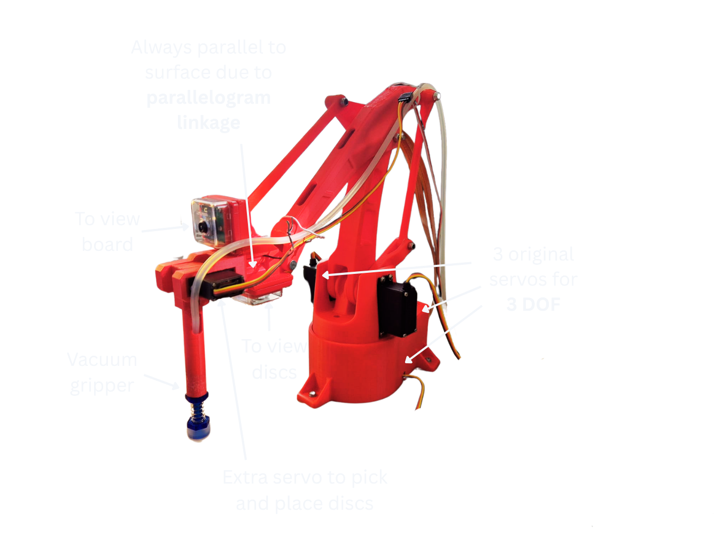
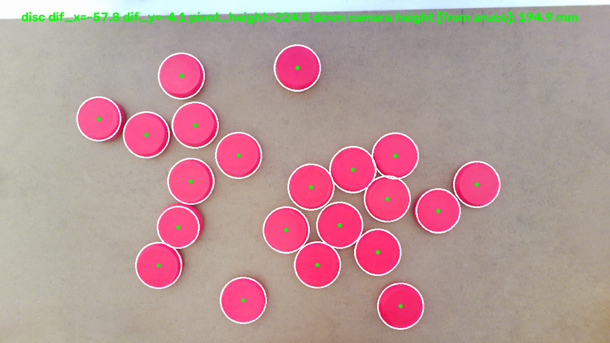
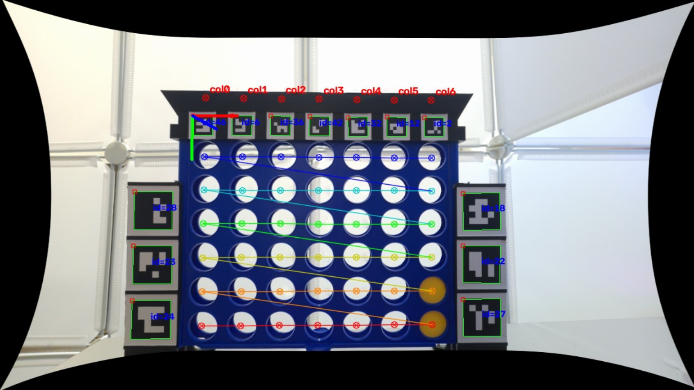
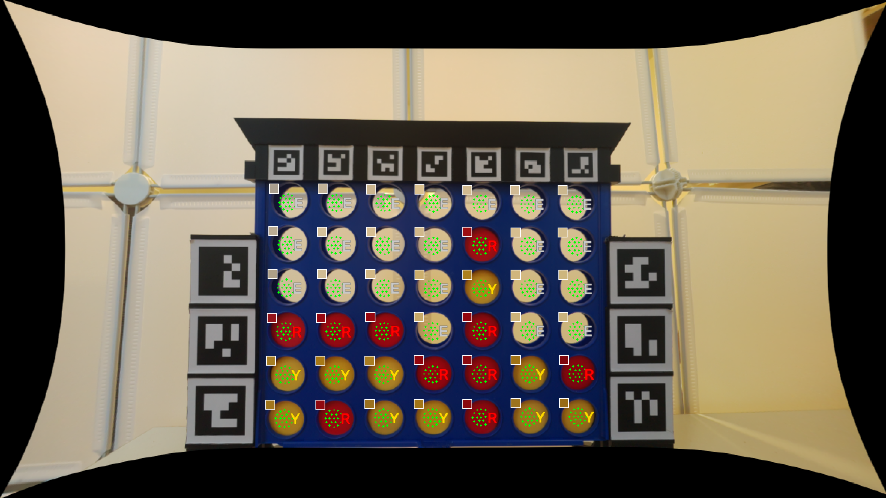
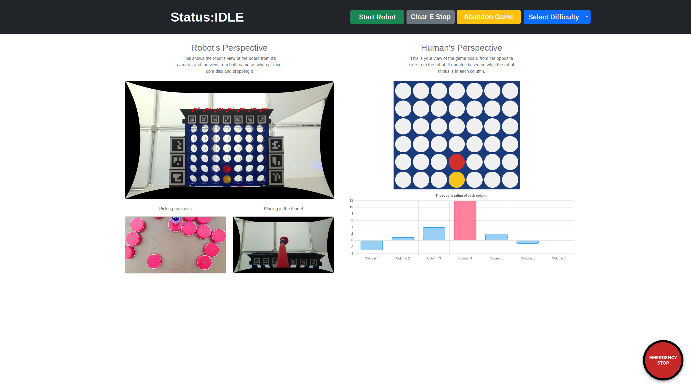

Connect 4 Playing Robotic Arm
A Connect 4 playing robot to be used as an outreach demonstrator, to give users an idea about what can be learnt at university.

Design
The base design used for the robot is the EEZYbotARM Mk2, an open source 3D printable robot. The robot uses a vacuum gripper to pick up the discs since they are light and flat
The hobby servos used by the EEZYbotARM do not have accurate positional feedback, so additional external feedback was necessary, via the two raspberry pi cameras.

Computer Vision
Discs
Detection of the discs in the pickup area is done by using HSV thresholding and the Hough circle transform. The green dots shown on the detected discs in the image are the estimated centres of each disc. These are used as the targets when picking up discs.

Pose
The pose of the board is solved from the thirteen ArUco markers fixed to the board. ArUco markers are fiducial markers which have unique black and white patterns. The board’s pose is detected using the PnP, (Perspective-n-Point) method. This method matches the known 3D points of the ArUco markers on the board with their corresponding 2D points from the image. This allows for the transformation from the board frame to the camera frame, which can then be used to work out the distance the robot must move.

Game State
Each window in the board is classified as yellow, red or empty based on majority sampling. 19 points are sampled per window, and each votes either yellow or red if it is within the HSV range for that colour. If it is in neither range, it votes for neither yellow nor red. To classify a window the votes for one colour must be 10 or more, and therefore larger than the votes for the other colour. Anything less than 10 is classified as empty.

User Interface
The UI is also used to illustrate different aspects of how the robot functions. This is important since the robot is a demonstrator and so it should avoid functioning like a ‘black box’.
The UI was designed to be easy to use since users on an open day would be unfamiliar with the robot. e.g it displays when the user is allowed to place a disc and when there is an error, so user can resolve them.